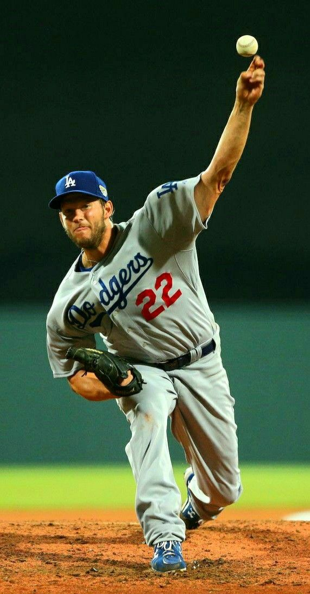

|

|
Clayton Kershaw es un beisbolista profesional estadounidense
que juega como lanzador en las Grandes Ligas de Béisbol (MLB).
Nació el 19 de marzo de 1988 en Dallas, Texas.
Kershaw ha jugado toda su carrera en las Grandes Ligas con los Los Angeles Dodgers,
donde ha sido uno de los lanzadores más destacados de su generación.
TITULOS:
- Campeón de la Serie Mundial (2020)
- MVP de la Liga Nacional (2014)
- 3 veces ganador del Premio Cy Young de la Liga Nacional (2011, 2013-2014)
- 9 veces seleccionado para el Juego de Estrellas (2011-2017, 2019, 2022)
- Ganador de la Triple Corona (2011)
- Ganador del Guante de Oro (2011)
- Segundo Equipo All-MLB (2020)
- 2 veces Líder en juegos ganados de la Liga Nacional (2011, 2014)
- Ganador del Premio Roberto Clemente (2012)
- 5 veces Líder en efectividad de la Liga Nacional (2011-2014,2017)
- 3 veces Líder en ponches de la LN (2011, 2013, 2015)
|